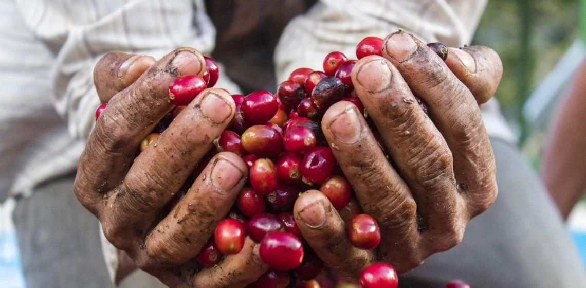
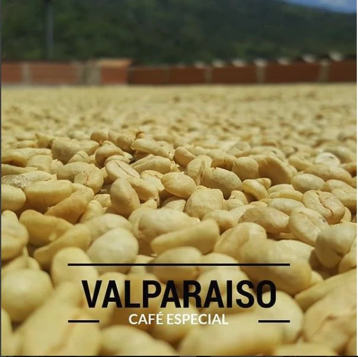
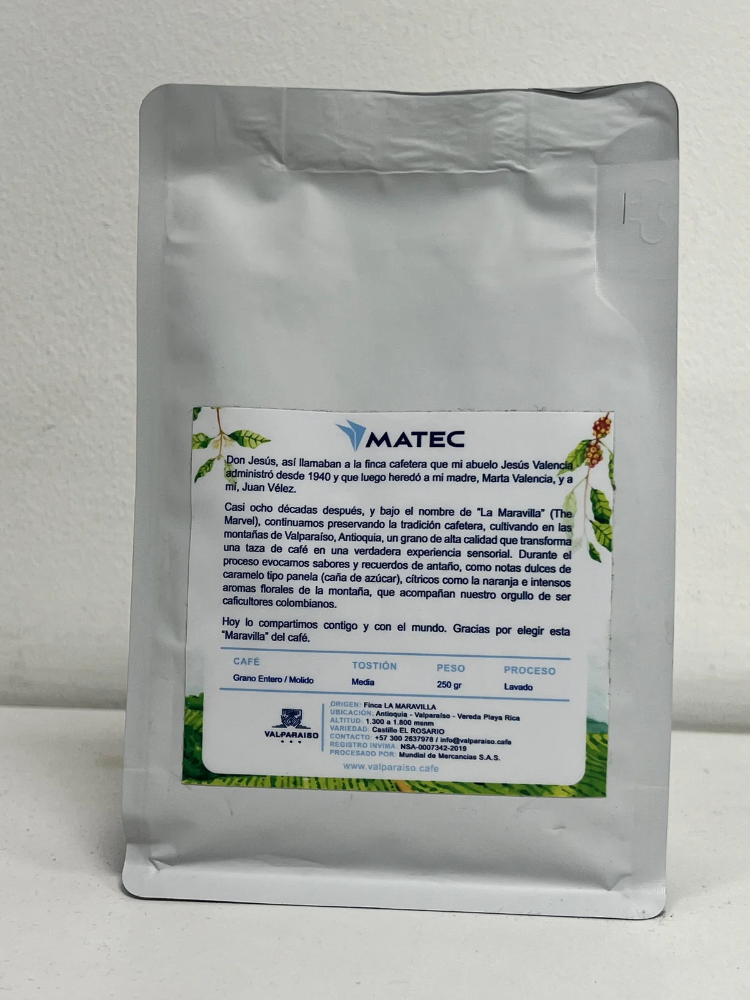

Fase 01 • RecolecciónCereza Madura en Árbol
Selección manual grano a grano en Vereda Playa Rica únicamente en su punto óptimo de concentración de azúcares naturales.
Cultivado sin intermediarios por tres generaciones de la familia Valencia Vélez entre los 1.300 y 1.800 msnm. Cosecha manual en cereza madura, secado al sol andino y tueste fresco semanal con calificación de excelencia 85.74 SCA.

“Don Jesús, así llamaban la finca cafetera que mi abuelo Jesús María Valencia trabajó desde 1940 y que luego nos heredó a mi madre Marta Cecilia Valencia Vélez y a mí.”
Ocho décadas después, bajo el nombre de Finca La Maravilla, preservamos intacto el oficio de cultivar café de alta montaña en las laderas volcánicas de Valparaíso, Antioquia. Cada lote nace de una trazabilidad absoluta: desde el árbol hasta la válvula desgasificadora de su empaque.
Rechazamos la mezcla industrial y el tueste oscuro comercial que oculta defectos. Nuestro proceso honra la química natural del grano: dulzor limpio a panela campesina, acidez cítrica de naranja madura y fragancia floral de niebla andina.

Fase 01 • RecolecciónSelección manual grano a grano en Vereda Playa Rica únicamente en su punto óptimo de concentración de azúcares naturales.

Fase 02 • Beneficio SolarReposo lento en patio solar con vista a la cordillera occidental hasta estabilizar la humedad del pergamino entre el 10% y 12%.
 Fase 03 • Ecosistema
Fase 03 • Ecosistema
Amplitud térmica entre los 1.300 y 1.800 msnm que ralentiza la maduración del fruto y densifica la estructura celular de la semilla.

Fase 04 • TrazabilidadEmpaque tricapa negro mate con válvula desgasificadora unidireccional, sello hermético y registro sanitario INVIMA vigente.
Un café de especialidad legítimo no requiere azúcar. Su tueste medio preserva los ácidos orgánicos y caramelos propios del fruto, entregando una bebida sedosa, limpia y naturalmente dulce.
Evaluado bajo protocolo internacional SCA. Humedad controlada, cero defectos primarios y perfil de tueste medio diseñado para destacar tanto en métodos de filtrado como en espresso contemporáneo.

Nuestras tres etiquetas identifican cada curva sensorial: Edición Negra (Lavado Clásico 85.74 SCA), Edición Naranja (Proceso Natural enmielado) y Edición Selección (Microlote Frutos Rojos).
Tostado en pequeños lotes semanales. Selecciona grano entero o la molienda exacta calibrada para tu método de extracción.
Protocolo oficial del Taller de Barismo de Valparaíso Café Co. para ajustar la granulometría y el tiempo de contacto según tu método.
Reemplazamos el café comercial de oficina por café de especialidad recién tostado con máquinas automáticas italianas Saeco que muelen el grano al instante.
Instalamos la máquina profesional Saeco sin costo de compra. Incluye suministro mensual de café Valparaíso con menos de 7 días de tueste, mantenimiento preventivo y soporte técnico integral. Tarifa desde $1.000 COP por taza según contador digital.
Abastecimiento programado en bolsas institucionales de 2.500g (5 lb) con tarifa oficial de $170.000 COP ($34.000/lb). Incluye calibración inicial de tus molinos y envío sin costo en Medellín.
Compra directa de equipos italianos Saeco Lirika Plus ($2.765.000 + IVA), Aulika Evo Focus ($4.830.000 + IVA) o Phedra Evo Cappuccino ($9.170.000 + IVA) con garantía extendida y tarifa preferencial en grano.
Servicio llave en mano por días para eventos corporativos. Incluye máquinas de alta capacidad, café de especialidad ilimitado, insumos completos y acompañamiento técnico en sitio.
Doble circuito hidráulico, capuccinador automático One-Touch y tolva de gran capacidad. Ideal para oficinas medianas y grandes.